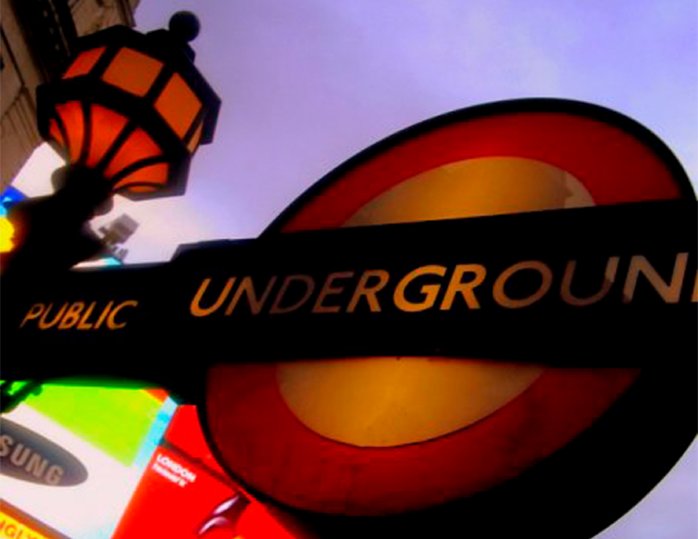

London på budget

Tips
Det er billgt at komme til London. Hvis du er heldig kan du komme derover for helt ned til 89 kr med fly. Vi har samlet et par trick til, hvordan du kan holde ferie, uden at ruinerer studiebudgetet.
Shopping
Primark
Primark er et must for den modebevidste kvinde, der søger tøj, sko og accessories på budget. Deres tøj bærger præ af at de hele tiden holder øje med catwalken, og løbende får nye kollektioner, som lader sig inspirer af de store modehuse. (sjov kommentar) Derudover har primark også et hav af lærkre basisvare til klædeskabet. Primark ligger ikke Danmark og man kan ikke købe deres vare online. Så gør dig selv den tjeneste at besøge denne fantastiske highstreetbutik, og få pifte dit outfit op med de nyeste trends og fylde dit klædeskab op med basisvare til ingen penge.
Tip:
Topshop
Topshop er en af Londons allerstørste highstreet butikker, hvis ikke den største. Priserne er forholdsvist billige og kvaliteten i top. Som studerende får du 10% i rabat. Butikken ligger på Oxfordstreet og har hele 5 etager. Hvis du har kærsten med, kan du glæde dig over at der også er en Topman i samme bygning, samt en bar i kælderen, så han kan snuppe en øl mens du kan shoppe i ro og mag.
Transport
Oystorcard.
En træls udgift i feriebudgetet er transportudgifterne. Heldigvis kan du med Oystorcard spare helt op til 50% på transport og få rabatter på en lang række lækre og spændende resturanter, butikker, museumer og oplevelser rundt om i London. Oystorcard kan burges til alle offentlige transportmuligheder i London. Det gælder også Londons undergrund, som vil kunne få dig rundt i hele London. På den måde får du bugdetet til at løbe lidt længere, og kan både rejse rundt billigt samtidig med, at du spare penge på en lang række resturanter, butikker, museumer og oplevelser rundt om i London.
Bestil hjemmefra. Derved spare du tid og kan nyde ferien endnu mere.
Seværdigheder
Gåtur langs themsen
Hvem siger at man ikke kan nyde attraktioner på afstand. Tag en tur ned langs Themsen og opleve en masse af Londons must see seværdigheder. Start gåturen fra Westminster Staionen. Herfra vil du ved at krydse Westminster Brigdes, kunne gå langs themsen og se en lang række af Londons must see seværdigheder.

Big Ben
Big Ben er en af Londons aller ældste must see seværdigheder. Det kæpemæssige klokketårn er en oplevelse i sig selv. Efter 158 år på bagen er det dog blevet tid til renovering. Du vil derfor ikke kunne opleve tårnets ringen før i 2021.

London Eye
Lodon Eye er Londons kæmpemæssige pariserhjul, som ligger helt ned til Themsen. Selve hjulet er flottest om aften på afstand, da det lyser op i mørket.

Tower Brigde
Tower Brigde er en enorm flot hængebro, som er karakteristisk med sin flotte lyseblå farve. Ved at krydse broen ender du i det historiske hjerte City Of London
Stop ved de første lyseblå vejere og få taget det perfekte selfie.

Leadenhall Market
Afslut gåturen i det overdådige victorianske Leadhall Market, som ligger i City of London. Den lange passage vil drage dig igennem englands vitorianske storhedstid, med de mange små hyggelige butikker og resuranter. Priserne er knap så studievenlige, men hvem siger at man behøver købe noget for at få oplevelser.